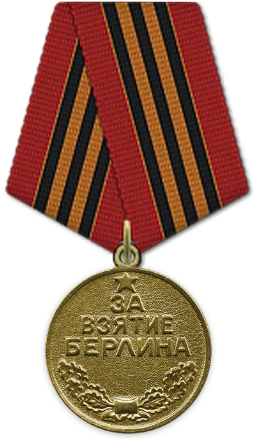
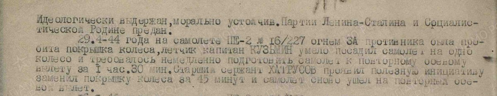
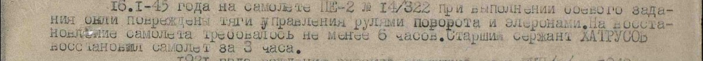
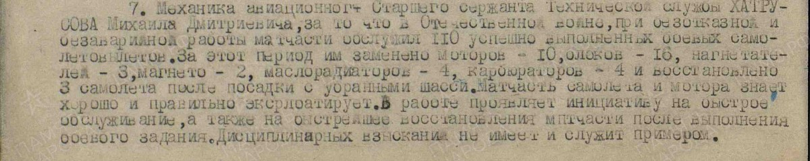
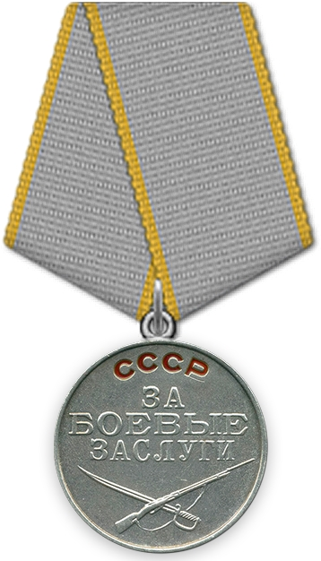
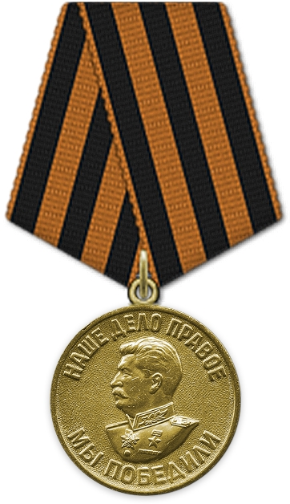
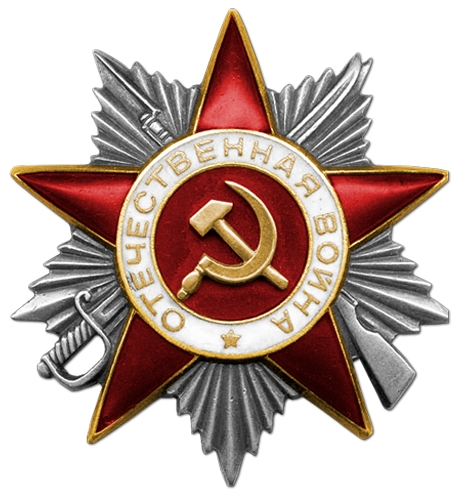
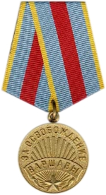

Родился: 10.11.1921, Дер. Боровая
Умер: 15.10.1998, г.Сланцы
Продолжительность жизни: 76
Место жительства: Дер. Боровая
Дата поступления на службу: 01.08.1940.
Воинское звание: Старший лейтенант.
Наименование воинской части: 34 бап 307 авд 16 ВА 1 БелФ, 527 бап 301 авд.
Награды:
Медаль «За боевые заслуги»;
Медаль «За победу над Германией в Великой Отечественной войне 1941–1945 гг.»;
Медаль «За взятие Берлина»;
Медаль «За освобождение Варшавы»;
Орден Отечественной войны II степени.
Дата окончания службы: 25.05.1946 г.
Ссылки на источники:
[1]. https://pamyat-naroda.ru/heroes/person-hero92008114/.
Отец: Хатрусов Дмитрий ---
Мать: Хатрусова --- ---
Жена: Хатрусова (Александрова) Мария Максимовна
Сын: Хатрусов Вячеслав Михайлович
Сын: Хатрусов Анатолий Михайлович
Медаль «За взятие Берлина» (Медаль). Наградной документ Дата рождения: 10.11.1921 Воинское звание: ст. сержант Кто наградил: Президиум ВС СССР Наименование награды: Медаль «За взятие Берлина» Дата документа: 09.06.1945 Документ находится в: ЦАМО шкаф 93, ящик 2. Подвиг 1 (Описание): 29.04.1944. «29.4.1944 на самолёте ПЕ-2 номер 16/227 огнём ЗА противника была пробита покрышка колеса, лётчик капитан Кузьмин умело посадил самолет на одно колесо и требовалось немедленно подготовить самолёт к повторному боевому вылету за 1ч. 30мин. Старший сержант ХАТРУСОВ проявил полезную инициативу заменил покрышку колеса за 45 минут и самолёт снова ушёл на повторный боевой вылет.». Подвиг 2 (Описание): 16.01.1945. «16.01.1945 на самолёте ПЕ-2 номер 14/332 при выполнении боевого задания были повреждены тяги управления рулями поворота и элеронами. На восстановление самолёта требовалось не менее 6 часов. Старший сержант ХАТРУСОВ восстановил самолёт за 3 часа.». Награждение Медалью "За боевые заслуги" (Медаль): 30.04.1945. Наградить медалью «ЗА БОЕВЫЕ ЗАСЛУГИ» «Механика авиационного старшего сержанта технической службы Хатрусова Михаила Дмитриевича, за то, что в отечественной войне при безотказной и безаварийной работы матчасти обслужил 110 успешно выполненных боевых самолетовылетов. За этот период им заменено моторов-10, блоков-16, нагнетателей-3, магнетто-2, маслорадиаторов-4, карбюраторов-4 и восстановлено три самолёта после посадки с убранным шасси. Матчасть самолета и мотора знает хорошо и правильно эксплуатирует. В работе проявляет инициативу на быстрое обслуживание, а также на быстрейшее восстановления матчасти после выполнения боевого задания. Дисциплинарных взысканий не имеет и служит примером.». Медаль «За боевые заслуги» (Медаль): 30.04.1945. Наградной документ Дата рождения: 10.11.1921 Место призыва: Глинковский РВК, Смоленская обл., Глинковский р-н Дата поступления на службу: 01.08.1940 Воинское звание: ст. сержант тех. службы Воинская часть: 34 бап 301 бад Даты подвига: 29.04.1944, 16.01.1945 Наименование награды: Медаль «За боевые заслуги». |
Медаль «За победу над Германией в Великой Отечественной войне 1941–1945 гг.» (Медаль): 09.05.1945. Наградной документ Дата рождения: __.__.1921 Воинское звание: ст. сержант Кто наградил: Президиум ВС СССР Наименование награды: Медаль «За победу над Германией в Великой Отечественной войне 1941–1945 гг.» Дата документа: 09.05.1945 Документ находится в: ЦАМО шкаф 93, ящик 2. Орден Отечественной войны II степени (Орден): 06.11.1985. Документ в юбилейной картотеке Дата рождения: 10.11.1921 Место рождения: Смоленская обл., Глинковский р-н, д. Боровая Наименование награды: Орден Отечественной войны II степени Номер документа: 176 Дата документа: 06.11.1985 Автор документа: Министр обороны СССР. Медаль "За освободение Варшавы" (Медаль). |
Источники:
1. ПАМЯТЬ НАРОДА 1941-1945. Тип: Веб-сайт. Ссылка (URL): https://pamyat-naroda.ru.